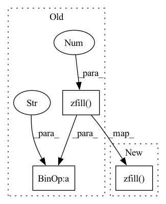

Pattern ID :34864
Before Change
s_img[mask] = c_img[mask]
out_path = os.path.join(dump_path_bkg_masked, "combined_" + str(cnt).zfill(4) + format)
out_path_inv = os.path.join(dump_path_person_masked, "combined_" + str(cnt).zfill(4 ) + format)
// print(out_path)
img = Image.fromarray(s_img)
img.save(out_path)After Change
// save combined imagery
combined_img_background_path = os.path.join(dump_path_bkg_masked, str(cnt).zfill(FILE_NAME_NUM_DIGITS) + dump_frame_extension)
combined_img_person_path = os.path.join(dump_path_person_masked, str(cnt).zfill( FILE_NAME_NUM_DIGITS) + dump_frame_extension)
cv.imwrite(combined_img_background_path, combined_img_background)
cv.imwrite(combined_img_person_path, combined_img_person)
else:In pattern: SUPERPATTERN
Frequency: 3
Non-data size: 3
Instances Fragment ID: 99913892
Project Name: gordicaleksa/pytorch-naive-video-neural-style-transfer
Commit Name: eb258a320653c1198a40fb422c98f1f37212c8cc
Time: 2020-08-03
Author: gordicaleksa@gmail.com
File Name: segmentation.py
M Class Name: AnonimousClass
N Class Name: AnonimousClass
M Method Name: stylized_frames_mask_combiner(3)
N Method Name: stylized_frames_mask_combiner(3)
M Parent Class:
N Parent Class:
M File Name: segmentation.py
N File Name: segmentation.py
M Start Line: 108
M End Line: 150
N Start Line: 109
N End Line: 156
Before Change
out = np.uint8(out)
if should_save:
out = Image.fromarray(out)
out.save(os.path.join(dump_path, str(img_id).zfill(4 ) + ".png" ))
if should_display:
plt.imshow(out)
plt.show()After Change
out_img = np.uint8(out_img * 255)
if should_save:
out_img = Image.fromarray(out_img)
out_img.save(os.path.join(dump_path, str(img_id).zfill( img_format[0]) + img_format[1]))
if should_display:
plt.imshow(out_img)
plt.show() Fragment ID: 99913893
Project Name: gordicaleksa/pytorch-neural-style-transfer
Commit Name: 81c579884b5780feca8c73755015fd89fcaf5078
Time: 2020-03-27
Author: gordicaleksa@gmail.com
File Name: utils/utils.py
M Class Name: AnonimousClass
N Class Name: AnonimousClass
M Method Name: save_display(6)
N Method Name: save_display(5)
M Parent Class:
N Parent Class:
M File Name: utils/utils.py
N File Name: utils/utils.py
M Start Line: 60
M End Line: 69
N Start Line: 44
N End Line: 52
Before Change
// print(np.histogram(processed_mask, bins=np.arange(256)))
mask_path = os.path.join(masks_dump_path, str(batch_id*batch_size+j).zfill(4) + "_mask" + format)
pmask_path = os.path.join(processed_masks_dump_path, str(batch_id*batch_size+j).zfill(4 ) + "_p_mask" + format)
mask.save(mask_path)
processed_mask.save(pmask_path)After Change
processed_mask = post_process_mask(mask) // simple heuristics (connected components, etc.)
filename = str(batch_id*batch_size+j).zfill( FILE_NAME_NUM_DIGITS) + mask_extension
// ::-1 because opencv expects BGR (and not RGB) format...
cv.imwrite(os.path.join(masks_dump_path, filename), mask)
cv.imwrite(os.path.join(processed_masks_dump_path, filename), processed_mask) Fragment ID: 99913891
Project Name: gordicaleksa/pytorch-naive-video-neural-style-transfer
Commit Name: 800d1f102a6821c05550ab79f012562d150d96d1
Time: 2020-08-02
Author: gordicaleksa@gmail.com
File Name: segmentation.py
M Class Name: AnonimousClass
N Class Name: AnonimousClass
M Method Name: extract_masks_from_frames(6)
N Method Name: extract_masks_from_frames(6)
M Parent Class:
N Parent Class:
M File Name: segmentation.py
N File Name: segmentation.py
M Start Line: 81
M End Line: 115
N Start Line: 56
N End Line: 86